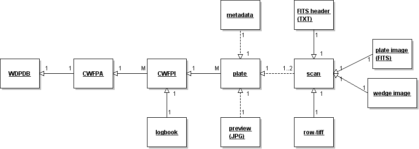

Нов български университет
Департамент "Информатика"
COST акция TD1403 - Ера на големи данни за
небето и за наблюдение на Земята
23.01. 2015 г., 13:00 часа, зала 702, II корпус
Николай Киров
COST
- COST е междуправителствена рамка за европейско сътрудничество
в областта на науката и технологиите, позволявайки координация
на национално финансирани научни изследвания на европейско
равнище.
- The 35 COST
Member Countries are: Austria, Belgium, Bosnia and
Herzegovina, Bulgaria, Croatia, Cyprus, Czech Republic, Denmark,
Estonia, Finland, France, Germany, Greece, Hungary, Iceland,
Ireland, Italy, Latvia, Lithuania, Luxembourg, Malta, The
Netherlands, Norway, Poland, Portugal, Romania, Serbia,
Slovakia, Slovenia, Spain, Sweden, Switzerland, Turkey, United
Kingdom and the former Yugoslav Republic of Macedonia.
COST Action
- COST акциите (инициативи) са гъвкав, бърз, ефективен и
ефикасен мрежов инструмент за изследователите да си сътрудничат
и да координират национално финансираните изследователски
дейности.
- COST акциите позволяват на европейските изследователи
съвместно да разработват свои собствени идеи във всяка област на
науката и технологиите.
Организация:
- Management Committee (MC)
- Core Group (CG)
- Work Groups (WG)
Организационни мероприятия:
- Kick-off Meeting
- MC meeting
- CG meeting
- WG meetings
Научни мероприятия:
- Workshop
- Training school
- Short-Term Scientific Mission (STSM)
- Conference
TD
COST action TD1403
Big Data Era in Sky and Earth Observation (BIG-SKY-EARTH)
Научни области:
- астрономия, астрофизика, геофизика, информатика
- астроинформатика, геоинформатика
Основни параметри:
- 275 хил. евро
- 1.03.2015 - 28.02.2017 (2 години) с възможност за
продължаване с още 2
4 работни групи
— WG1: Optimization of database tools in astro- and geophysics
contexts:
this group is focused more on the back-end tools providing support
for knowledge extraction from large datasets (database management
systems, hardware configurations, heterogeneous environments,
location of processing of large users' data-requests, etc).
— WG2: Data mining and machine learning in the petabyte era as
frontiers in astronomy and Earth observation:
this group is inclined more toward front-end solutions visible to
the users, where often tools used to date fail or are too slow on
petabyte datasets.
— WG3: Education of a new generation of experts in knowledge
extraction from massive datasets:
this group has the task of identifying critical gaps in the Big Data
users' skills, organizing materials needed for training and
education of users, and organizing training sessions.
— WG4: Visualization of high dimensional data:
this group explores various aspects of visualization of large
datasets under scientific and outreach requirements, promotes the
role of visualization in data-mining (visual analytics) and assesses
various visualization tools.
Участващи държави: Белгия, България, Великобритания, Германия,
Дания, Ирландия, Испания, Италия, Латвия, Македония, Полша,
Португалия, Румъния, Сърбия, Унгария, Франция, Холандия, Хърватия,
Чехия (Гърция, Естония, Израел, Малта, Словения)
Мероприятия на TD1403
за 2 години:
- Kick-off meeting
- MC meeting - 3
- CG meeting - 4
- WG meetings - 4
- Workshop - 4
- Training school - 3
- Short-Term Scientific Mission (STSM)
- Conference - 1
Българско участие:
проф. Огнян Кунчев, ИМИ-БАН
доц. Николай Киров, НБУ
доц. Милчо Цветков, ИМИ-БАН
Минали проекти:
Българо-сръбска астрономическа конференция (астроинформатика).
ДО-02-275/2008 Астроинформатика: Обработка и анализ на
дигитализирани астрономически данни и уев-базирано приложение,
проф. Огнян Кунчев - ИМИ, БАН
ДО-02-273/2008 База от данни за широкоъгълни фотографични
астрономически наблюдения: развитие и достъп чрез Интернет,
доц. Милчо Цветков, Институт по астрономия, БАН
German DFG grant STE: 710/6-1/20.11.2009 - Дигитализация на Каптейн
фотографски астрономически плаки в Астрофизически институт на
Потсдам,
Милчо Цветков, Катя Цветкова, Николай Киров
База данни за широкоъгълни
астрономически фотографични наблюдения (wfpdb.org)
Астрономически фотографски плаки:
- 130 години наблюдения
- над 2 милиона плаки в цял свят:
Милчо
Цветков и Катя Цветкова
1992 г. - създаване на базата
Организация на базата от данни

Каталог на архивите - 499 инструменти: професионални телескопи и
камери (фотоапарати) на дадено място.
Индекси - 117 архиви с данни за всяка плака, 640 хиляди плаки.
Сканирани в Европа - над 300 хиляди.
Технолотии и инструменти
за въвеждане на архиви.
Технология и инструменти за
сканиране и включване в базата от данни.
Големи данни - 1 ГБ на плака - организация на разпределена база от
данни, идентификация, транспорт на данни,